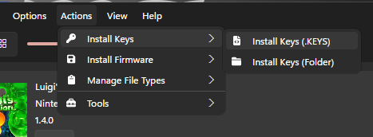
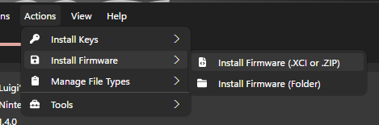
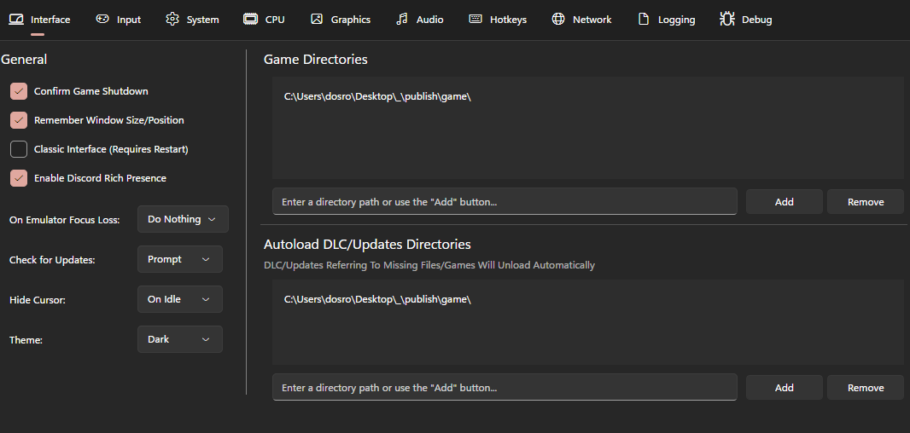
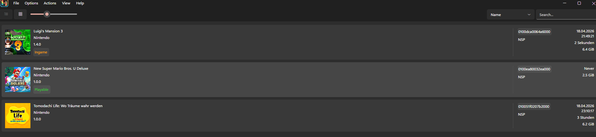

🎮 Nintendo Switch Emulation Guide
Play Tomodachi Life
on your PC
A clean, step-by-step guide to set up the Ryujinx emulator and get the game running.
1
Download Everything First
📥 Required Downloads
Download all three files before doing anything else. Make sure WinRAR is already installed on your PC, you will need it to extract the files.
⚠ WinRAR Required: You need WinRAR installed to extract these files. You can download it for free at winrar.com.
📂 Extract the Emulator
- Right-click
ryujinx-canary-1.3.272-win_x64.zip and select Extract Here with WinRAR.
- Open the extracted folder and launch
Ryujinx.exe.
- Once it is open, you can delete the original
.zip file. It is no longer needed.
🔑 Key error on first launch? That's normal. Ryujinx may show a "Keys not found" or similar error when you open it for the first time. Don't worry — you haven't added the keys yet. You will do that in Step 3. Just close the error and continue.
🔕 Disable the Console Window
- In Ryujinx, click Options in the top menu bar.
- Find Show Console and uncheck it to hide the debug console window.
💡 Tip: This keeps Ryujinx clean and prevents an extra black window from appearing every time you launch a game.
🔑 Extract and Install the Keys
- Right-click
ProdKeys.NET-v22.0.0.zip and select Extract Here.
- This will produce a
prod.keys and a title.keys file.
- In Ryujinx, navigate to Actions → Install Keys → Install Keys (.KEYS).
- Select the
prod.keys file from the folder you just extracted.

💾 Install the Firmware
- Do not extract
Firmware.22.0.0.zip. Leave it as a ZIP file.
- In Ryujinx, go to Actions → Install Firmware → Install Firmware (XCI or ZIP).
- Select the
Firmware.22.0.0.zip file directly and Ryujinx will install it automatically.
💡 Note: Unlike the keys, you do not extract the firmware ZIP. Just select it directly from where you downloaded it.

5
Verify the Installation
✅ Check the Status Bar
Look at the bottom-right corner of the Ryujinx window. The firmware version should be displayed there.
✅ All good if Firmware Version: 22.0.0 appears in the bottom right. Only the firmware is shown there, the keys do not have a separate indicator. If nothing appears, redo Step 4.
📁 Point Ryujinx to Your Games
- Go to Options → Settings.
- Open the Interface tab and find the Game Directories section.
- Click Add and choose the folder where you will store your game files, for example
C:\Games\Switch\.
- Optionally, add a separate folder for DLCs and updates in the Autoload DLC/Updates Directories section below.

7
Download and Install Tomodachi Life
🎮 Download the Game (2 Parts)
The game file is split into two parts. You need both of them to extract the game correctly.
🛡️ Heads up: these download sites have ads. We recommend using an ad blocker like uBlock Origin (free, available for Chrome and Firefox) before clicking the links below. This helps avoid accidental ad clicks and keeps things clean. You can find it by searching "uBlock Origin" in your browser's extension store.
⚠ Download both parts before extracting. The two files work together — when you go to extract in the next step, they both need to be in the same folder at that moment. If they somehow ended up in different places, just move them into the same folder before you start extracting. That's all that matters.
📦 How to Extract the Game (Step by Step)
- Open the folder where you saved both
part1.rar and part2.rar. They need to be in the same folder.
- Select both files at the same time: click on
part1.rar, then hold Ctrl on your keyboard and click part2.rar. Both files should now be highlighted/selected.
- Right-click on either of the two highlighted files and choose Extract Here. WinRAR will automatically read both parts together and produce a single
.nsp game file.
- Once extraction is done, move the
.nsp file into the Games folder you set up in Step 6 — for example C:\Games\Switch\. Ryujinx will detect it and show the game in your list.
⚠ Make sure both files are selected before you right-click. If you only right-click part1.rar by itself without selecting both, WinRAR will only extract half the data and the result will be broken or incomplete.

🎮 Configure Your Gamepad
If you want to play with a controller, connect it to your PC first and then configure it inside Ryujinx.
- Go to Options → Settings.
- Click the Input tab at the top of the settings window.
- Click the Input Device dropdown and select your controller from the list, for example PS4 Controller (0) or Xbox Controller (0).
- Click Apply and then OK to save the settings.
💡 Tip: Make sure your controller is plugged in or paired via Bluetooth before opening the settings. If it does not appear in the list, reconnect it and reopen the Input tab.
🎉
You're All Set!
Tomodachi Life should now appear in your Ryujinx game list and your controller is ready. Just double-click the game to start playing.
Enjoy your island life! 🌴🏘️